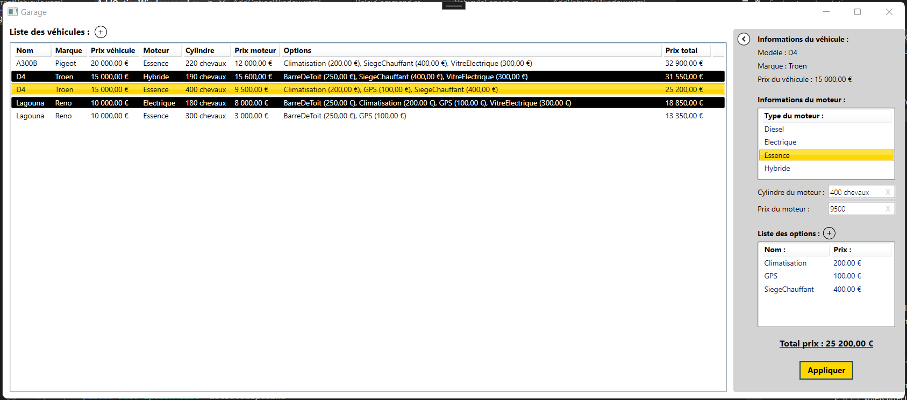
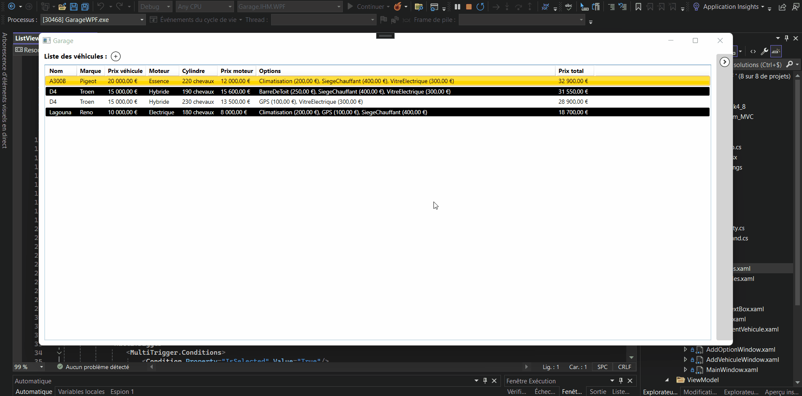
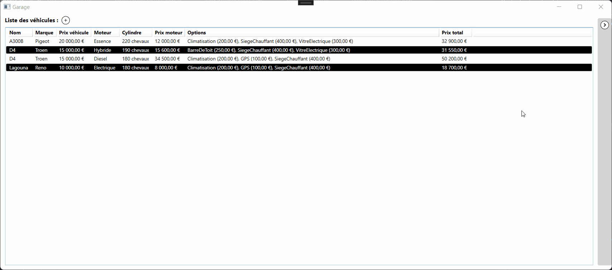
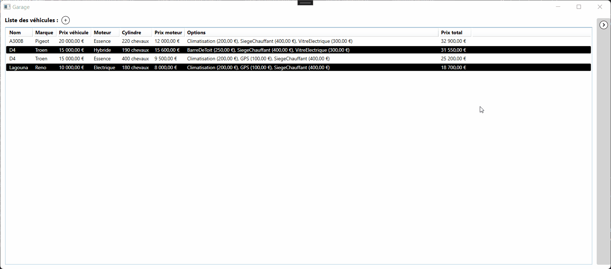
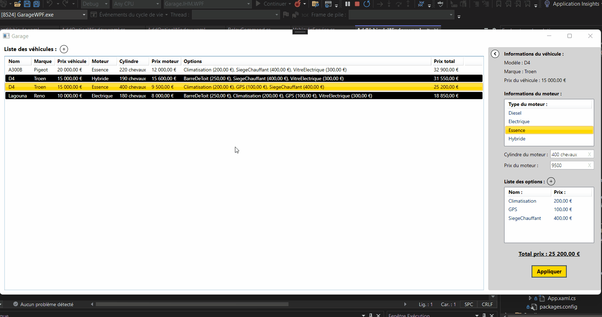

Introduction rapide
WPF (Windows Presentation Foundation) est une bibliothèque de développement d'applications graphiques sous Windows,
incluse dans le framework .NET de Microsoft. Elle est utilisée pour créer des applications de bureau riches en fonctionnalités et en interfaces utilisateur.
Principales caractéristiques :
- Utilisation du modèle MVVM (Model-View-ViewModel) pour séparer clairement la logique de l'application de son interface utilisateur.
- L'interface utilisateur est définie en XAML, un langage de balisage qui permet de décrire les interfaces de manière déclarative.
- Utilisation de Data Binding (fonctionnalités de liaison de données) pour permettre aux éléments de l'interface utilisateur de se lier facilement aux données de l'application.
- Prend en charge les animations et les graphiques vectoriels, ainsi que les graphismes 3D, permettant de créer des interfaces utilisateur dynamiques et interactives.
Exercices
Aperçu de l'application à développer :

Dans votre dépot git créez un nouveau dossier. Depuis Microsoft Visual Studio créez un nouveau projet de type "Application WPF (.NET Framework).
Ciblez la version .NET Framework 4.8.
Exercice 1 : Prise en main de WPF
Prenez en main Visual Studio et WPF en créeant une application simple qui respecte les éléments ci-dessous :
- Utilisation du modèle MVVM (Model-View-ViewModel)
- Utilisation du Data Binding
- Manipuler simplement les composants de bases : Grid, StackPanel, TextBlock, TextBox, Button, ListView, Expander, et ScrollViewer
Exercice 2 : Création d'une ListView
Maintenant que vous avez les bases en WPF et l'architecture en place. Commençons a créer l'IHM de l'application Garage. L'application devra être responsive.
- Créez un dossier MVVM. Dans celui-ci créer une classe qui hérite de INotifyPropertyChanged et implémenter l'interface. Vos Models, votre ViewModel et vos UserControl.cs pourront en hériter pour ne pas réimplémenter INotifyPropertyChanged.
- Créez maintenant dans ce même dossier une classe qui hérite de ICommand et implémenter l'interface. A l'avenir, quand vous voudrez exécuter une méthode à partir d'un élément de l'XAML, vous utiliserez la propriété "Command".
- Adapter vos models à l'utilisation réel de votre interface graphique. Utiliser la librairie AutoMapper, et implémenter des CreateMap pour passer d'un model à un autre.
- Développez une ListView qui affiche toutes les informations de chaque véhicule. Les options seront séparés par des virgule dans une même colonne.
- Stylisez votre ListView et déplacer votre style dans un dossier "Styles". Manipuler les Triggers pour stylisé le style de l'item actuellement sélectionné.
Essayez de reproduire un résultat similaire :

Exercice 3 : Création du volet
- Créez un Expander à droite de la fenêtre. Placez à l'intérieur toutes les informations du véhicule sélectionné.
Le cylindre et le prix du moteur doivent être dans des TextBox. Le type du moteur et les options seront dans des ListView.
- Ajoutez un bouton "Appliquer". Au click de celui-ci le véhicule doit être mis à jour et persisté dans la BDD. (Les options seront gérer plus tard). Mettez également la liste à jour.
- Ajoutez a votre Core métier des DTO approprié à chaque opération (add, update, ou remove). Pour la modification de votre véhicule, créer une instance DTO update et passez la au service.
- Une fois cela fonctionnelle, déplacé le XAML du volet dans un nouveau UserControl. Celui-ci sera réutilisez plus tard pour la création d'un véhicule.
La logique derrière devra maintenant être géré par le usercontrol.cs (Pas de ViewModel pour les User Control).
Les paramètres nécessaires seront données par le main via des "DependencyProperty". Créez un eventHandler dans le UserControl pour retourner le véhicule modifié. C'est le Main ViewModel qui s'occupe de modifier et persister le véhicule.
Essayez de reproduire un résultat similaire :

Exercice 4 : Création de la window pour gérer les options
- Créer un button avec une image "+". Au click de celui-ci créer une nouvelle window et afficher là avec la méthode ShowDialog().
- Créer une ListView pour permettre à l'utilisateur de sélectionné une ou plusieurs options, parmi toutes celles disponibles et que le véhicule ne possède pas déjà.
- Ajouter un button "Ajouter". Au click de celui-ci la fenêtre ce ferme. Récupérer le résultat du ShowDialog() et récupérer les options sélectionné dans le parent.
- Ajouter un ContextMenu à votre ListView avec un MenuItem pour supprimer la ou les options sélectionné.
Essayez de reproduire un résultat similaire :

Exercice 5 : Création du véhicule
- Comme pour l'exercice précédent, ajouter un button avec une image "+" au dessus de la ListView des véhicule, et créez une nouvelle Window et afficher là avec ShowDialog().
- A l'intérieur d'un ScrollViewer et d'un StackPanel, créez une ListView afin que l'utilisateur choississe parmi les véhicule disponibles, et réutilisez le UserControl du volet. Le véhicule à sélectionné sera celui de la ListView de la Window.
- Ajouter un ContextMenu à votre ListView principale qui liste les véhicules et un MenuItem pour supprimer le véhicule sélectionné.
Essayez de reproduire un résultat similaire :

Exercice 6 : Clean du projet
- Vérifiez que chacune de vos fenêtre est responsive et ne masque aucun élément. Nous devons pouvoir utliser le programme au maximum de l'écran.
- Vérifiez que vous respectez les principes d'inversions de dépendances.
- Renseignez vous sur la librairie Autofac et implémentez la pour injecter vos dépendances à la construction des éléments dans votre Main.